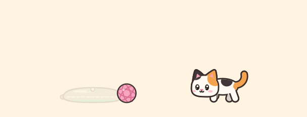
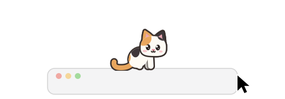

ひだまりねこ
ウィンドウの上で、小さなねこが暮らすアプリです（Mac・Windows）。

よくある質問
- メニューはどこ？ Mac はメニューバーの肉球、Windows は通知領域の肉球（見えないときは「^」の中）か、ねこの右クリックです。

- 使い方を知りたい メニューの「使い方をためす」で、操作を 1 つずつ案内します。
- ねこが見えない メニューの「ウィンドウの上で遊ぶ」に印があるかを見てください。ウィンドウがないときは、Dock・タスクバーの上にいます。

- データは集めていますか？ 集めていません。すべて端末の中だけで動きます。
- お金はかかりますか？ すべての機能が無料です。「応援する」は任意です。

お問い合わせ
© 2026 Mitsuo Yamamoto